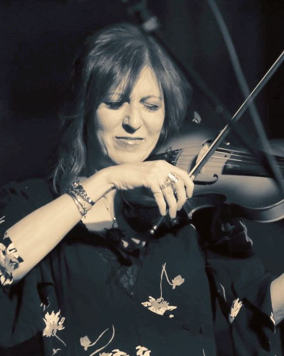
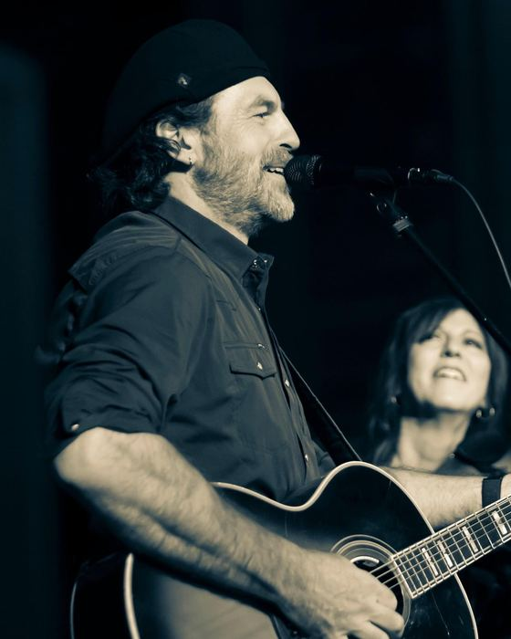

See them
electric violin, guitar & two voices
Living rooms to Carnegie Hall.A show you'll be talking about tomorrow.
What people are saying
Deni Bonet and Chris Flynn's performances are irresistible for their charisma and musicality.
Together they remind me George Allen and Gracie Burns, or Lucy and Ricky; their banter, charisma and musicality combine to create a playful, lively, sometimes surprising performance.
Great to have hosted you at Wexford Arts Centre. Wonderful evening of stunning music, stories and songs!
What a wonderful evening! It was a pleasure to meet you and Chris and an equal pleasure to experience your combined incredible musicianship. Here's to more Bonet & Flynn in years to come.
Thank you for your amazing performance at the Steamer Firehouse Gallery!! Everyone loved you (of course). The only people who were disappointed were those who had other plans on Friday.
Thank you so much for a fabulous night! You are so full of LIGHT and LOVE! (plus talent, joy, and the list goes on…) You and Chris are wonderful together. We all had a terrific night. Thank you so much!
I loved watching the interactions between Deni and Chris. I had a wonderful time, and many of our patrons and staff told me that they did as well! We will all be talking about this concert for a long time to come — Deni and Chris are blessed with such talent!
Acclaimed violinist Deni Bonet and guitarist Chris Flynn wowed an enthusiastic audience with an outstanding performance at our library. The exceptional performance, fun stories, and upbeat energy created a fantastic evening for all that were lucky to see the show. We can't wait to have them back at the Patterson Library!
Deni Bonet and Chris Flynn are a refreshing musical delight! I, and our patrons, highly recommend them for a library concert!
A concert with Deni and Chris is better than a B12 shot!
There is a rare magic in hearing two musicians create a sound so rich and expansive that you'd swear a full band was hiding in the wings. That is the signature experience of Deni Bonet and Chris Flynn.
Having graced legendary stages from Carnegie Hall to Mountain Stage, this dynamic duo brings an unforgettable and diverse energy to every performance. At the heart of their sound is a captivating balance of melody and motion. Deni's virtuosic violin playing is a force of nature, soaring, expressive, and technically brilliant. Underpinning that melodic flight is Chris's guitar work, which drives the sound with a deep, physical pulse. He effortlessly anchors the groove and holds down the harmony, giving the music a steady heartbeat you can actually feel. On top of this foundation, both swap effortlessly between commanding lead vocals and tight, interlocking harmonies.
A live show with Deni and Chris is defined by warm, playful interaction with the audience. They treat every gig like a shared experience, with the simple goal of giving the crowd a joyful escape for an hour or two. Whether they are trading off vocal duties or letting the instruments tell the story, Deni and Chris leave every audience smiling, energized, and completely connected.

electric violin & vocals
With a dynamic career spanning stages around the world, Deni Bonet has built a reputation as a virtuoso electric violinist, singer-songwriter, and captivating performer. Early on, Deni honed her craft as an original member of the house band for NPR's Mountain Stage before launching a standout solo career and becoming an in-demand collaborator for legends like Cyndi Lauper, R.E.M., Warren Zevon, Richard Thompson, and Sarah McLachlan to name a few.
From performing at Carnegie Hall and the White House for President Obama, to touring internationally, she has continually redefined what it means to rock a violin. A fixture of New York's vibrant live scene, Deni has brought her fiery string work and electric energy to countless stages, festivals, and recordings across the globe.
denibonet.com
guitar & vocals
With a career deeply rooted in the heart of the East Coast music scene, Chris Flynn has built a reputation as a dynamic guitarist, vocalist, and musical director. Early on, Chris helped pioneer a communal approach to the indie music business as a founder of Cropduster Records, an artist-owned label and cooperative collective that served as a hub for the NY/NJ roots and pop scenes.
He also served as the Musical Director for New York's famed All-Star Irish Rock Revue, an annual St. Patrick's Day celebration whose roster over the years included members of Fountains of Wayne, Flogging Molly, The Pogues, the Alice Cooper Group, and Bad Company. Under his direction, the ensemble played everywhere from the Bowery to Lincoln Center.
See them
On stage
Loading dates…
One tap and they'll tell you when we're playing near you.
Recently played
Booking
Listening rooms to house concerts. Theaters to festivals.You know your audience. We know how to win them over.
booking@bonetflynn.com